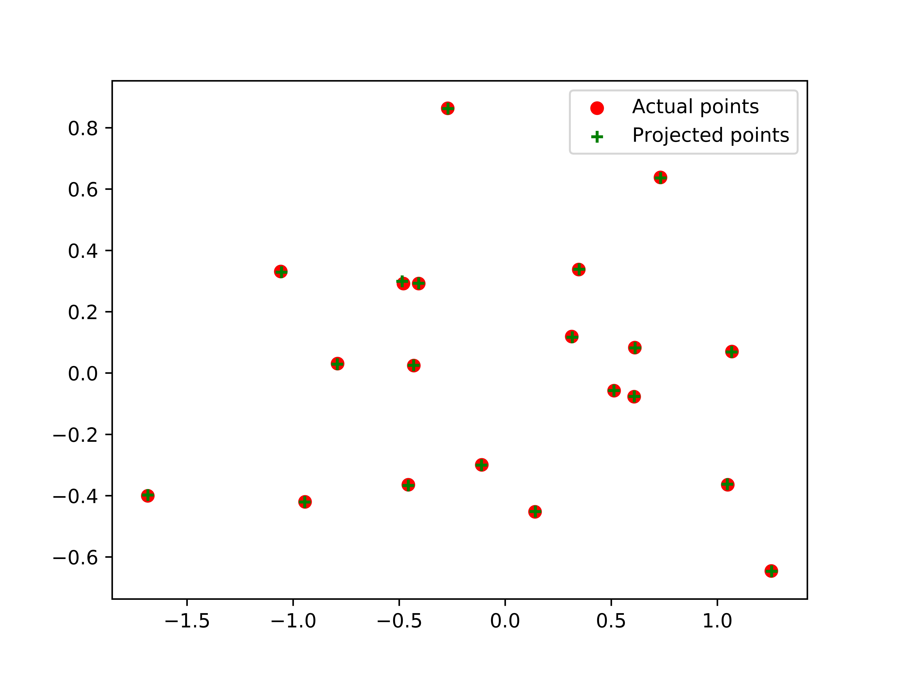
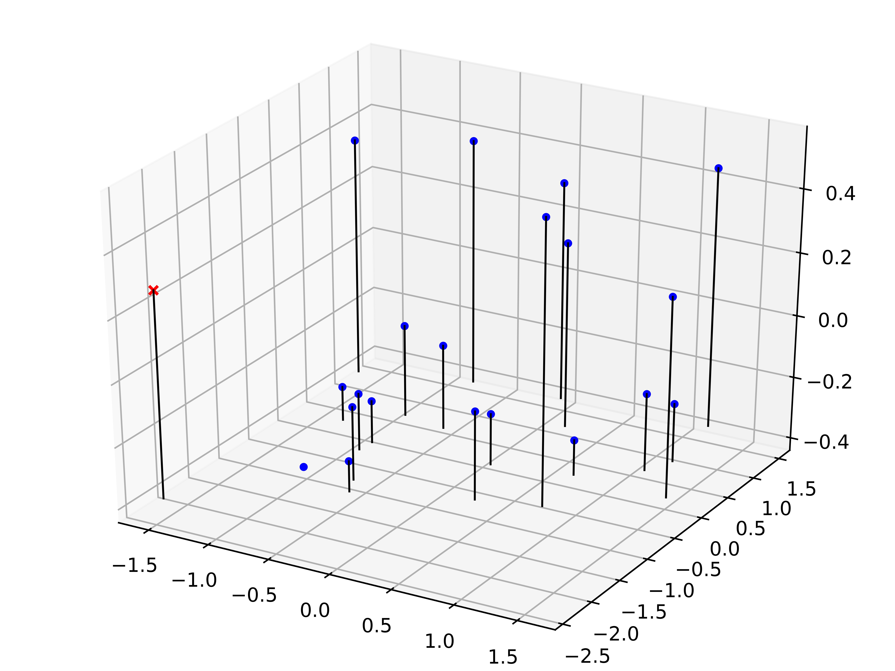
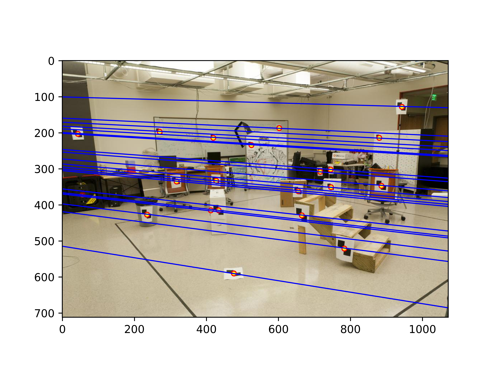
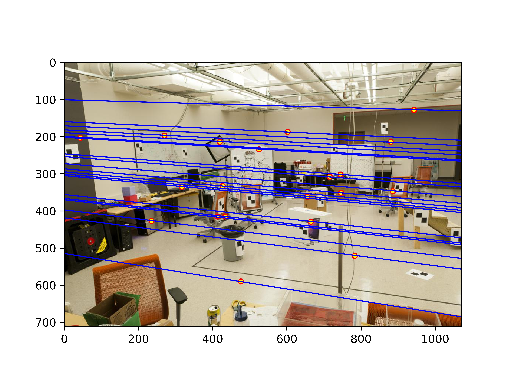
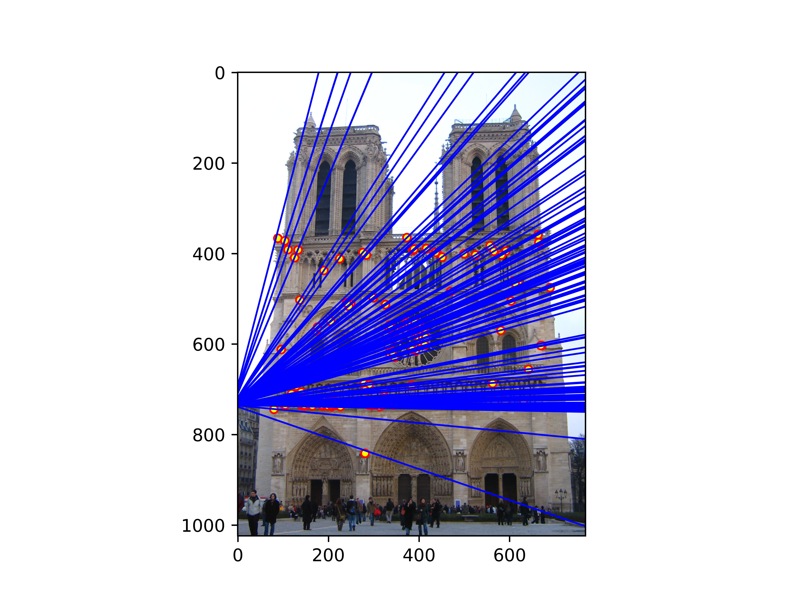
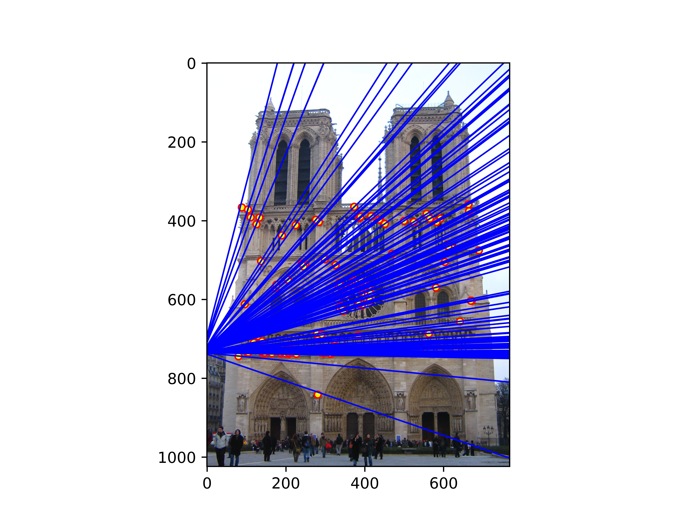
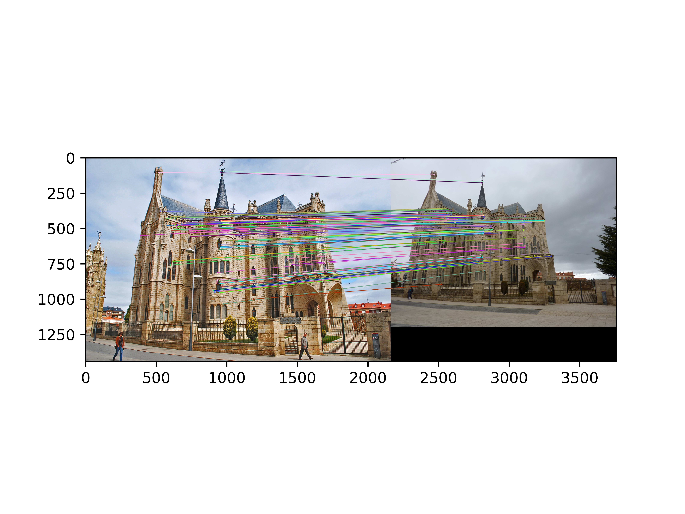
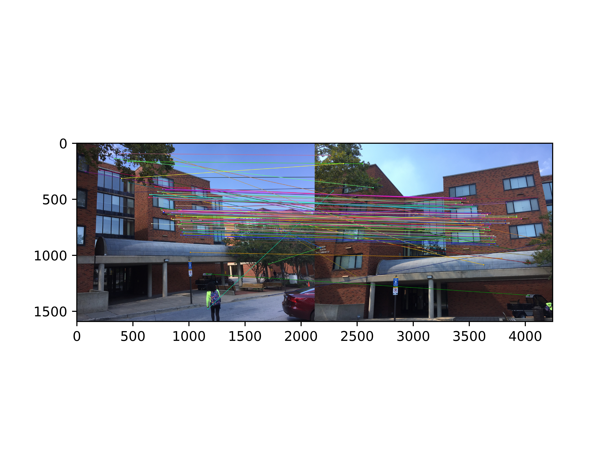
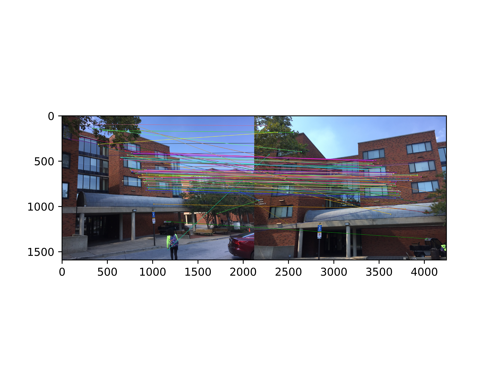

Project 3: Camera Calibration and Fundamental Matrix Estimation with RANSAC
Camera Projection Matrix and Center

Notre Dame Cathedral
The first step in camera calibration is to calculate the fundamental matrix from 2-d image coordinates from their ground truth corresponding 3-d coordinates, this was accomplished by taking these set of n coordinates and building a matrix equation from it that we can solve with a least squares function. We set this system of equations up by multiplying out the terms for pair of coordinates and then setting the last element of the matrix to 1 to fix the scale. Taking the first two rows of the result allows us to build a system of equations each equation solving for an x or y coordinate in the 2-d plane. We then can solve for the remaining 11 entries in the fundamental matrix if we have at least 6 image pairs (which generates 12 equations) as we need at least as many equations as variables to have a solvable system of equations. Through this method the fundamental matrix was calculated with a residual of 0.044535. We can now use this matrix to find the camera center by separating the first three columns from the last and solving the equation C = -inv(Q)*m4, where Q is the matrix formed by the first three columns and m4 is the last. Using this fundamental matrix on the image provided the camera center was found to be <-1.5126, -2.3517, 0.2827>.
Fundamental Matrix Estimation
Next, we wish to estimate the fundamental matrix between two images using a collection of points for each image. Similar to the calculation of the fundamental matrix we use the fact that the fundamental matrix when multiplied by the projection coordinates will convert to the other images corresponding coordinates. First each set of coordinates is normalized by using a scale factor equal to the mean of the standard deviation of each dimension and the mean value of each dimension. Then as before we build a system of equations to solve only now we have 8 variables to solve for and we need 8 image coordinate pairs, fixing the 9th variable as -1 to set the scale we then use a least squares function to solve the matrix equation. This only yields the normalized fundamental matrix, so we convert it back with the equation F = Tb’*F_norm*Ta. Where Tb,Ta are the matrices used before to normalize the points. Then the corresponding epi-polar lines from each image cross through the corresponding points on the other image.
|     |
RANSAC
We are no able to create a RANSAC algorithm that takes in a set of possible matching image pairs generated through an ORB function and builds a fundamental matrix to describe all the actual matches from the two images. This was achieved by randomly selecting 10 pairs of coordinates and estimating the fundamental matrix between then, then checking every other possible match to see if the fundamental matrix described it. The metric used was the equation x’*F*x = 0 +- error, where the error was set to 0.05 (smaller errors resulted in very few inliers and any larger resulted in huge amounts of inliers). In addition to checking if the fundamental matrix described this pair as inliers the geometric mean of the dimensions of the images was also used to compare to the distance between the points, only allowing the points to contribute to the score of the matrix if it was within 15% of the calculated max radius. Then the set of matches was sampled 1000 times or until a matrix scored over 100 (for visualization purpose mostly) with the highest scoring matrix kept as the best. This allowed for a near perfect matching between images including images with difficult to match interest points.

 

|

 


|